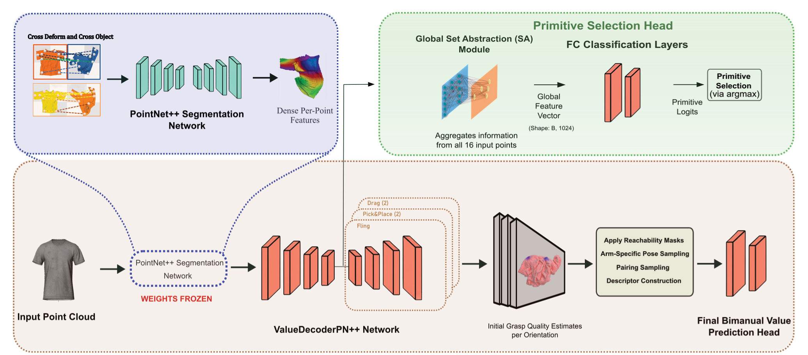

Category-level generalization for robotic garment manipulation, such as bimanual smoothing, remains a significant hurdle due to high dimensionality, complex dynamics, and intra-category variations. Current approaches often struggle, either overfitting with concurrently learned visual features or failing to predict the value of synergistic actions.
We propose the Feature-Conditioned Bimanual Value Network (FCBV-Net), operating on 3D point clouds to specifically enhance category-level policy generalization. FCBV-Net conditions bimanual action value prediction on pre-trained, frozen dense geometric features, ensuring robustness to intra-category garment variations.
In simulated GarmentLab experiments with the CLOTH3D dataset, FCBV-Net demonstrated superior category-level generalization. It exhibited only an 11.5% efficiency drop on unseen garments compared to 96.2% for a 2D image-based baseline, and achieved 89% final coverage. These results highlight that the decoupling of geometric understanding from bimanual action value learning enables better category-level generalization.
The core hypothesis is that explicitly conditioning an action's value on robust, pre-trained per-point geometric features improves generalization. We use dense features pre-trained for structural understanding and keep them frozen during policy learning.
FCBV-Net Architecture: Dense geometric features are extracted by a pre-trained and frozen PointNet++ backbone. A ValueDecoderPN++ Network predicts initial grasp quality, while a parallel Primitive Selection Head determines the manipulation primitive (Fling, Drag, PickPlace).
Select a category to view the dataset samples (12 samples per category).
@misc{daba2025fcbvnet,
title={FCBV-Net: Category-Level Robotic Garment Smoothing via Feature-Conditioned Bimanual Value Prediction},
author={Mohammed Daba and Jing Qiu},
year={2025},
url={https://arxiv.org/abs/2508.05153},
doi={10.48550/arXiv.2508.05153}
}